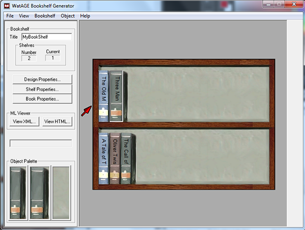

> Getting Started with Bookshelf Editor >
Opening an existing file
4.2. Opening an existing file
To open an existing bookshelf file:
- From the File menu, click Open.
- Navigate to the directory where your bookshelf file is saved.
- Choose your bookshelf file and click Open.
The bookshelf in the existing file is displayed in the Work Area, and related information is displayed in the Tool Panel.
